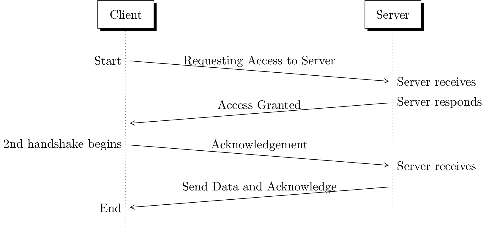

\documentclass[ border={60pt 0pt 55pt 0pt}
% left bottom right top] real order is left bottom right top
]{standalone}
\usepackage{float}
\usepackage{tikz}
\usetikzlibrary{positioning, fit, calc, shapes, arrows}
\usepackage[underline=false]{pgf-umlsd}
% message between threads
% Example:
% \bloodymess[delay]{sender}{message content}{receiver}{DIR}{start note}{end note}
\newcommand{\bloodymess}[7][0]{
\stepcounter{seqlevel}
\path
(#2)+(0,-\theseqlevel*\unitfactor-0.7*\unitfactor) node (mess from) {};
\addtocounter{seqlevel}{#1}
\path
(#4)+(0,-\theseqlevel*\unitfactor-0.7*\unitfactor) node (mess to) {};
\draw[->,>=angle 60] (mess from) -- (mess to) node[midway, above]
{#3};
\if R#5
\node (#3 from) at (mess from) {\llap{#6~}};
\node (#3 to) at (mess to) {\rlap{~#7}};
\else\if L#5
\node (#3 from) at (mess from) {\rlap{~#6}};
\node (#3 to) at (mess to) {\llap{#7~}};
\else
\node (#3 from) at (mess from) {#6};
\node (#3 to) at (mess to) {#7};
\fi
\fi
}
\begin{document}
%\begin{figure}[H]
% \centering
\begin{sequencediagram}
\newinst{c}{Client}
\newinst[6]{s}{Server}
\bloodymess[1]{c}{Requesting Access to Server}{s}{R}{Start}{Server receives}
\bloodymess[1]{s}{Access Granted}{c}{L}{Server responds}{}
\bloodymess[1]{c}{Acknowledgement}{s}{R}{2nd handshake begins}{Server receives}
\bloodymess[1]{s}{Send Data and Acknowledge}{c}{L}{}{End}
\end{sequencediagram}
%\caption{Client-Server messaging example}
%\end{figure}
\end{document}Created by David Li